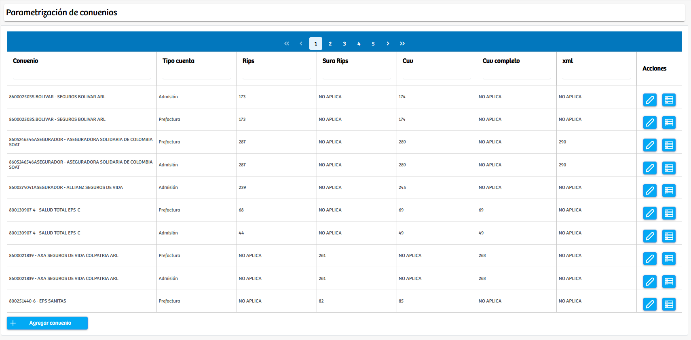
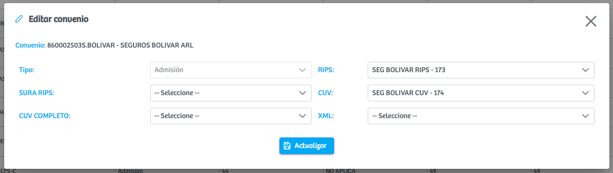
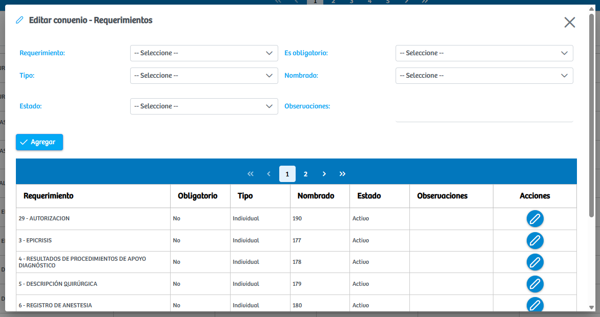
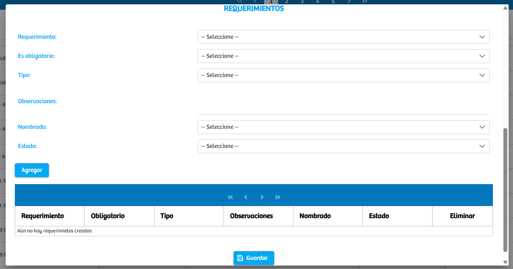

Modulos Sas-Web
Funcionalidades
Parametrizar Convenios
El módulo Parametrizar Convenios permite gestionar la configuración de los convenios que utiliza la institución para el procesamiento de cuentas y generación de soportes. Al ingresar a este módulo, se despliega una vista general donde se listan todos los convenios previamente parametrizados, junto con la información relevante de cada uno, como: nombre del convenio, tipo de cuenta, códigos RIPS asociados, valores de CUV y XML, así como los botones de acción correspondientes. Cada convenio incluye con el dos botones principales: Editar Convenio y Agregar o Eliminar Requerimiento
Cuando escogemos la opcion de "Editar Convenio" el sistema abre un modal en el cual se muestran los campos configurables de cada convenio como pueden ser:
- Tipo de Cuenta
- Código RIPS
- Código SURA RIPS
- Código CUV
- CUV Completo
- Archivo XML
El usuario podrá modificar cualquiera de estos valores y actualizar la configuración del convenio mediante el botón “Actualizar”.
Por otra parte, al presionar el botón "Agregar o Editar Requerimientos", se abre un modal especializado que muestra una tabla con todos los requerimientos que ya se encuentran relacionados con ese convenio. Desde esta ventana es posible agregar nuevos requerimientos seleccionando:
- Requerimiento
- Obligatorio (Si/No)
- Tipo
- Nombrado(de archivos) Asociado
- Estado
- Observaciones
Cada registro también cuenta con botones para editar requerimientos previamente configurados.
Ademas de esto el modulo principal cuenta con otro botón: "Agregar Convenio" que al ser presionado nos abre un modal donde se nos permite parametrizar un convenio completamente desde cero, Aqui se solicita la informacion que ya hemos mencionado como:
- Convenio
- Tipo de Cuenta
- Código RIPS
- Código SURA RIPS
- Código CUV
- CUV Completo
- Archivo XML
En la parte inferior del formulario se encuentra una sección adicional para parametrizar los requerimientos que harán parte del convenio. Allí es posible definir cada requerimiento junto con su nombrado de archivo antes de guardar completamente el convenio. Es muy importante mencionar que cada convenio puede requerir estos soportes de una forma diferente, asi que hay que poner atencion a lo que se parametriza.
Este módulo centraliza toda la administración de convenios, permitiendo mantener actualizada la configuración necesaria para la correcta construcción de cuentas, generación de soportes y cumplimiento de requisitos administrativos.